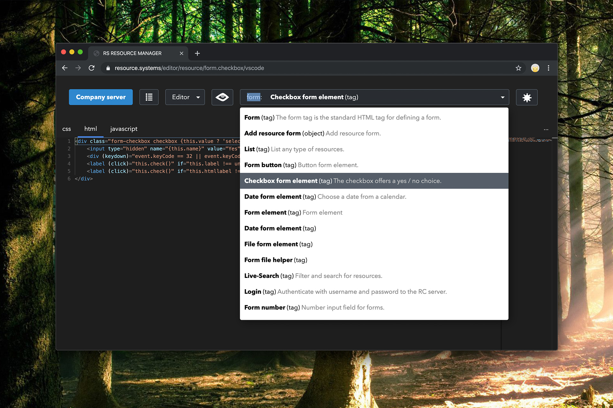
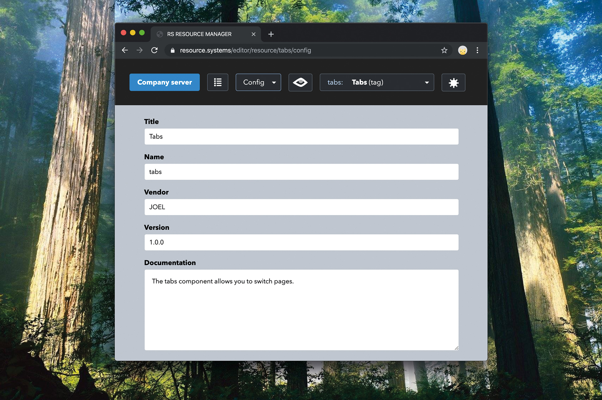
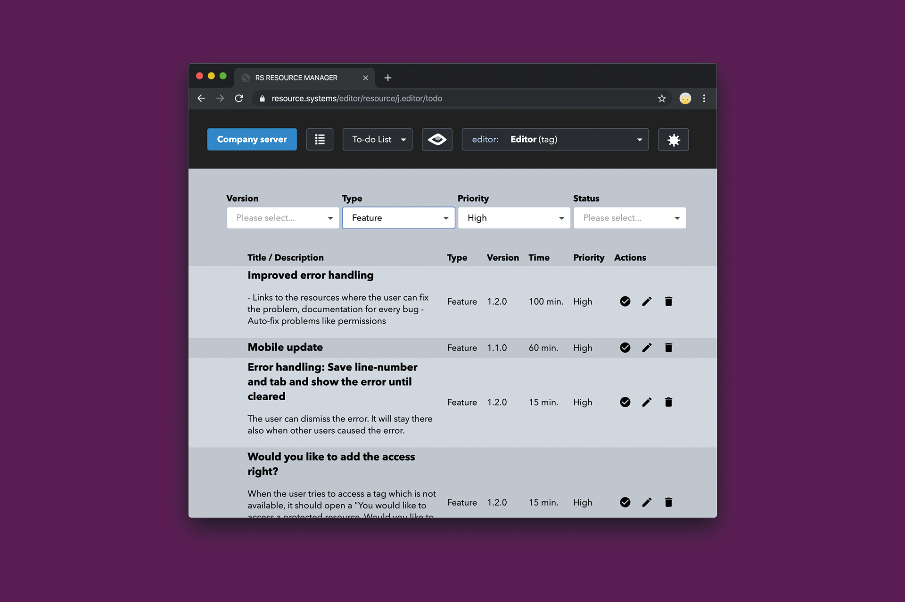
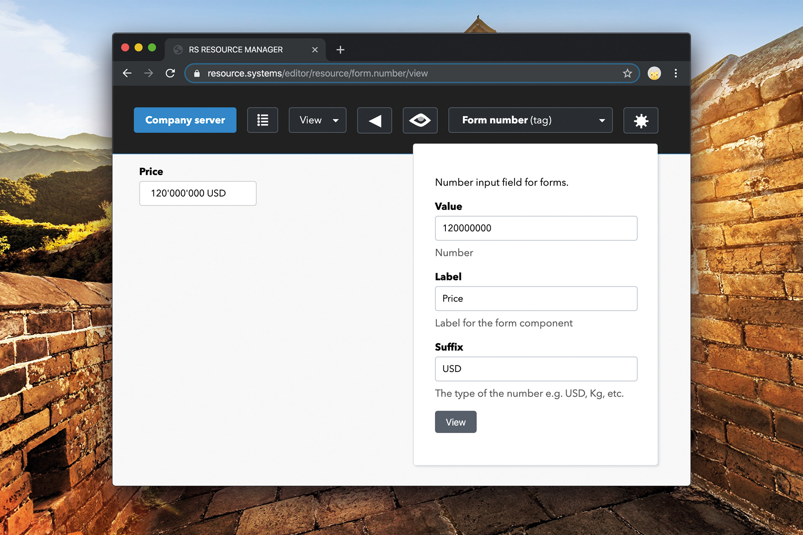
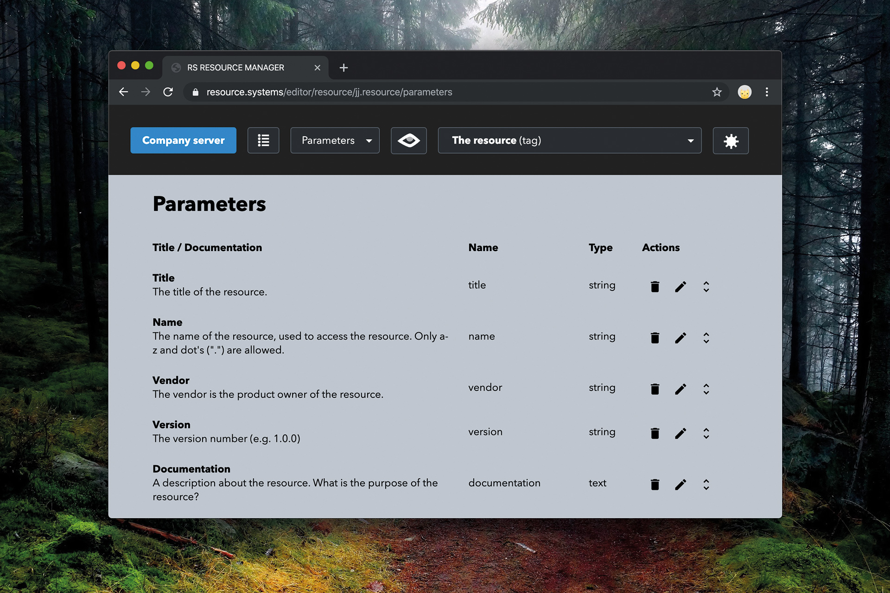
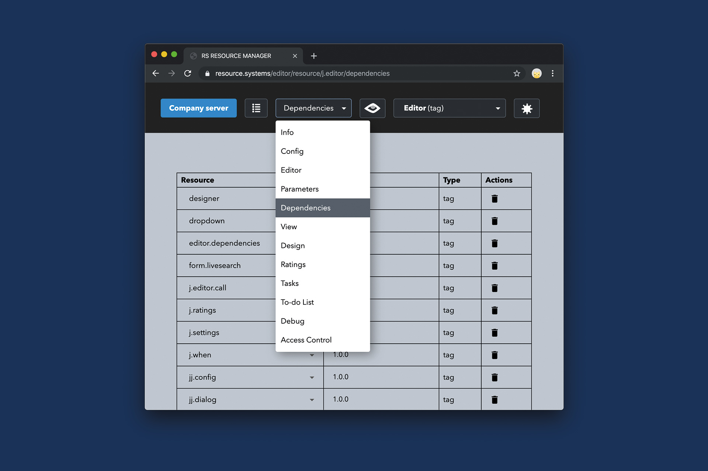
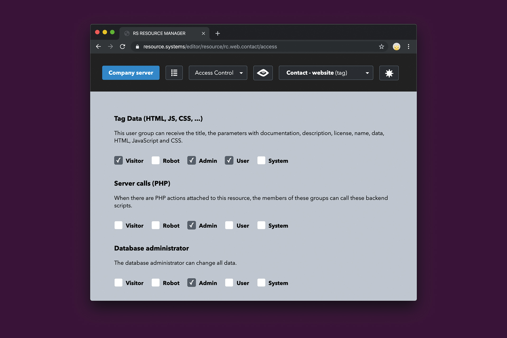
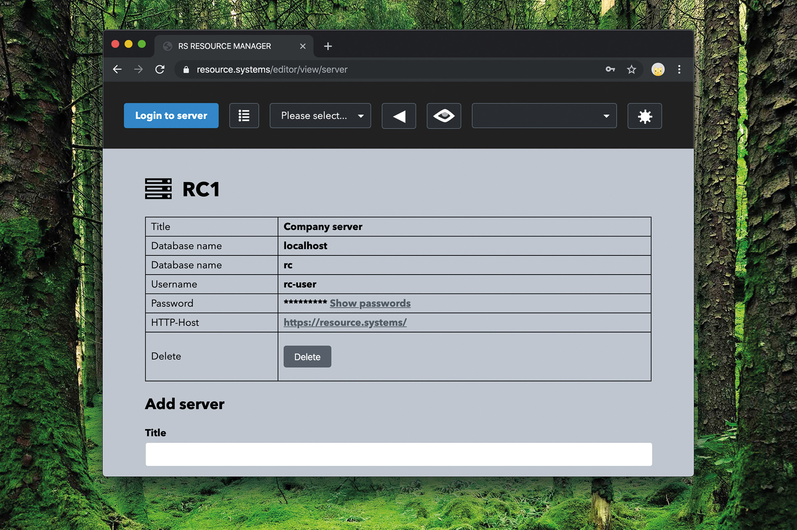
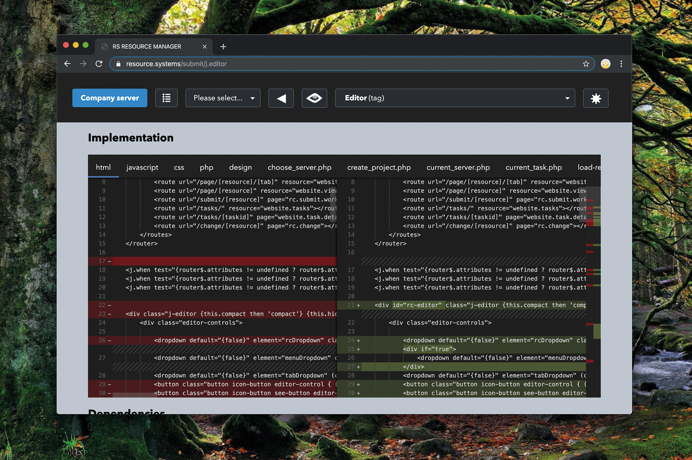

- Full-stack web-components: Install the HTML/CSS/JS-Tag with PHP-backend-script and database-tables in one click!
- The only application needed with all features required to create an application or website.
- All technologies are structured, configured, documented, etc. in the same way.
Editor
Code, view and debug your webservices, tags, etc. with our editor. The editor supports PHP, JavaScript, SVG, CSS, HTML and much more! Autocomplete, auto-format and a history.
Each resource can have multiple source code files attached.
Settings and defaults
Each resource like your designs, database-tables, functions, etc. have settings and you can set defaults for all types of components.
Task Management
Full task management with a defined workflow for software with a measurable quality.
Create a public offering for a task (like programming, designing, etc.), define the max. amount of $. The selected resource and all dependencies are downloaded to a protected sandbox-server where the worker can complete the task.
{kind=link}
{kind=link}
{kind=link}
The task management can be used with the same account to work and earn money, or offer offer for others.
- Outsource work
Taks are public work offerings for your resources. Just add a new task and configure the maximum amount of money, you would like to spend. - Work in projects
Complete programming and design tasks and earn money. Tell us your skills and we will offer you from time to time programming work.
Through an intelligent algorythm that helps to find the best programmers and workers, and automatically offers them money to complete tasks. The software chooses the workers with the best ratings in the category. Just attach tasks to your recources and our hard working employees will do the job for you.
With 1 one click and 10 seconds of work your idea goes from your todo-list to your task list, where a qualified worker is solving the problem for the chosen amount, or less, in minutes!
To-do list
The to-do list is saved on your server and contains all ideas, bugs, features and improvements you have. You can define the priority and estimate a time.
View
- View your designs, sites, views, tables
The view section automatically generates a form with all the required parameters, to see your resources! - Access functions and services
Execute functions and services directly from the RS RESOURCE MANAGER and see their results immediataly! - Access data
The administator can access all possible data in a formatted table.
Design
Instead of writing HTML-code. Use the RC RESOURCE MANAGER Design-Tool to create your user-interface. It already knows which tags are allowed and shows the attributes for your tags.
Parameters
Each resource can have multiple parameters. A parameter has a name, a type (e.g. a text, number), checks (validators), etc.
Resources can be tags, database tables, webservices, scripts, functions and much more. All these resources have parameters. The parameters are used to generate preview forms, to test your tags, call webservices, view resources, etc.
With the form.resource tag, your can autogenerate a form for a specific resourcetype. These parameters will be used to create the form!
Dependencies
All resources (forms, services, functions, designs, ...) have dependencies. The idea of the programming theory is that each component can run standalone and knows their dependencies. These dependencies are independent from technology so a HTML-site could have PHP-dependencies, so the server knows which components are required to fulfil a task.
User and Access Management
While you can use the authentication system of your choice, we also would like you to offer our user interface and access management solution.
Server management
Manage servers and connect to multiple servers with your RS RESOURCE MANAGER.
{kind=link}
History
The RC RESOURCE MANAGER includes an own versioning system. Archive your resources, compare the current resource to the archive and reset your resources.
What is a resource?
An image, a method, a class, an object, a database table, a database row, a website, a tag, a webservice, they all have common attributes and they are all resources.
You can view resources, you can qualify, categorize, rate, comment, configure, license resources, design, specify resources and define their dependencies, document, settle finances, test, review them, buy them and sell them, people can work on these resources or outsource them, and you can define who can access them. There are a lot of things that resources have in common. So the resource company decided to standardize a resource, with a new dynamic method of software application definition. A resource can have parameters, which can be texts, numbers, images, or any other kind of data.
Compare to traditional development
| Standardized Development with Resource Manager | Traditional Development | |
|---|---|---|
| Source-Code, Designs, etc. | Database in flat structure | Undocumented file structure |
| Tools needed | Resource Manager | Editor, Git, Framework, Jira, etc. |
| Automated Project Management | Yes | No |
| Automated Outsourcing | Yes | No |
| Time for installation of OpenSource components | 10 seconds | 30 minutes |
| Configuration | Standardized in database | In hundreds of different places |
| View and test all components | Standardized way to view components, execute functions and services with auto-generated form for parameters | No |
| Define parameters | Standardized | Different for each technology |
| Manage dependencies |
Manage dependencies technology-independent | Different for each technology |
Download and Install
The code is freely available on GitHub under the GNU GPLv3 license.
Technologies
The current platform is specialised for a PHP/HTML/CSS/JS/MySQL environment with Apache server. The Resource Manager is technology independent and can also store and compile C, C++, Java-code, JSON, Designs, Files, etc.
PHP
A full-stack tag can have PHP-scripts attached to access the database or execute functions on the server.
MySQL
All of your data, including programming code, is saved in the MySQL-database.
HTML/CSS/JS
Create your own tags with HTML/CSS/JavaScript.